Super Electro Ball
Phần thưởng chuỗi thắng: thắng liên tiếp 10 level thì kích hoạt Super Electro Ball — mọi Electro Ball trên bàn được "gấp đôi hiệu ứng" (bắn tia vào nhiều màu thay vì…
Mô tả
- Phần thưởng chuỗi thắng: thắng liên tiếp 10 level thì kích hoạt Super Electro Ball — mọi Electro Ball trên bàn được "gấp đôi hiệu ứng" (bắn tia vào nhiều màu thay vì một) cho tới lần thua đầu tiên.
- Thanh tiến trình 0/10 hiện ở icon Home, icon trong Prelevel và popup riêng; khi đủ 10 có panel "Super Electro Ball is now active!".
- Thua hoặc thoát level làm mất chuỗi/mất trạng thái (cảnh báo
SEBLose1). - Được cài như một event giả (
AEventManager, EventType = None) có bundle riênggameplay/super_electro_ball/*, mở ở L101 hoặc L301 tùy nhóm AB. - Giá trị thiết kế: giữ người chơi chơi liền mạch, tăng chi phí tâm lý khi thua (đi kèm cảnh báo trong dialog thoát/extra moves của nhiều event).
Thiết kế chi tiết
Tóm tắt thiết kế
Code Thắng liên tiếp 10 level (thanh 0/10 ở icon Home và trong Prelevel) → panel “Super Electro Ball is now active!”. Từ level kế, mọi Electro Ball đều là bản siêu: sau màu đầu tiên còn tìm tiếp màu phổ biến kế tiếp cho tới khi đủ 2 màu (ElectroBallStrategy.isSuper), có tia và hiệu ứng riêng. Trạng thái giữ cho tới lần thua đầu tiên.
Code Thua, thoát, hoặc level không được khôi phục khi mở lại app → mất SEB và chuỗi. Lúc vào level có SEB, chuỗi tạm ghi 0 ngay (chỉ thắng mới ghi lại 10), nên thoát giữa chừng không giữ được. Dialog thoát / mua lượt hiện cảnh báo “SEBLose”.
CodeLive 11/11 Mở ở L101 (AB 28 nhóm B) hoặc L301 (nhóm khác); trạng thái khoá “Beat Level {0} to unlock” hiện từ L11. Snapshot 11/11: AB 28 = 3 → tài khoản này mở ở L301; IntRemoteKeyValue 17 (trạng thái SEB) = 0.
Code Có thể nhận SEB làm phần thưởng (RewardType 50 → chuỗi = 10) khi level ≥ mốc mở + 10 và chưa đầy. Kẹt bàn hoặc server refresh giữa level thì SEB được hoàn.
Nhận định Đi cặp với Magic Pot: Magic Pot thưởng chuỗi ngắn (1–5 thắng), SEB thưởng chuỗi dài (10 thắng) — hai tầng lý do “đừng thua”, cùng đổ vào cảnh báo khi thoát và màn mua thêm lượt.
14/11, đợt11: chụp tutorial và prelevel L301. UI mô tả10 thắng để kích hoạt, gấp đôi hiệu ứng đến lần thua; prelevel thực0/10,7/10 trong tutorial là minh họa. Chưa kiểm chứng chuỗi thắng/kích hoạt/mất trạng thái, chưa full-pass.
14/11, đợt12: fixture offline đặt SEB9/10 rồi thắng thật L402→10/10,popup kích hoạt; Hũ Phép1→2. L403 chọn Electro Ball prelevel26→25,nhận bóng SEB đỏ, tap bắn cả đỏ và xanh dương;20→19 lượt. Thoát hai bước cảnh báo mạng rồi SEB;retry SEB0/10 và hũ0. Ledger core_seb_boundary_ledger.json. Không phải chuỗi10 thắng tự nhiên/backend; còn giữSEB khi thắng,refresh,reward,migration,lỗi asset.
Luồng người chơi từng bước
- Trạng thái khoáGiao diệnCodeTừ level 11 (
LockedStateLevel), icon và Prelevel hiện “Locked” với “Beat Level {0} to unlock” (101 hoặc 301). - Mở khoá và tutorialGiao diệnCodeĐạt mốc mở: icon được đưa lên trước, chạm mở popup; tutorial chỉ nút Info; ở Prelevel có tutorial icon riêng. Đặt bit đã xem tutorial.
- Popup SEBGiao diệnCode
SuperElectroBallDialog: “Beat 10 levels to activate the Super Electro Ball!”, thanh tiến độ, nút Play (mở Prelevel) và Info. Bundle chưa tải thì dialog tự đóng. - Thắng → chuỗi +1ClientCode
OnLevelWinghi chuỗi = giá trị sau level (kẹp ≤ 10) vào IntRemoteKeyValue 17; Home chạy animation thanh “Beat {0} more levels”. - Đủ 10 → kích hoạtGiao diệnCodeVề Home sau trận thắng thứ 10: animation thu vào icon và
SuperElectroBallClaimPanel“Super Electro Ball is now active!” (tiêu đề ảnh theo ngôn ngữ, mặc định tiếng Anh). - Vào level có SEBClientCode
OnLevelStart: chuỗi ≥ 10 → tải pool asset từ bundlegameplay/super_electro_ball/gameplay, bật bit 9 “đang chơi với SEB”, ghi chuỗi tạm = 0. Analytics LevelStart/LevelEnd có tham sốsuper_electroball_active. - Electro Ball siêuNgười chơiCodeMọi Electro Ball trên bàn (tạo từ match 5, booster, Magic Pot) dùng chiến lược siêu: chọn màu (màu viên swap hoặc màu nhiều nhất), rồi tiếp tục thêm màu phổ biến kế tiếp cho tới khi danh sách màu ≥ 2; tia và particle dùng pool riêng. Combo
 2 Electro Ball cũng có bản siêu.
2 Electro Ball cũng có bản siêu. - Thắng khi đang có SEBClientCodeChuỗi được ghi lại 10 → SEB tiếp tục ở level sau (“until your first fail”).
- Thoát / hết lượt: cảnh báoGiao diệnCodeQuitDialog và dialog mua lượt hiện cảnh báo mất SEB (“SEBLose1”; biến thể ghép với event: Flying Contest, Kingdom Duels, Power Rush).
- Thua → mất SEBClientCode
OnLevelFail/WontRestoreLevel: xoá bit 9, chuỗi giữ 0. Về Home chạy animation thanh tụt về 0. - Nhận SEB từ phần thưởngClientCode
CanGiveAsReward: level ≥ mốc mở + 10, đã đủ level, chuỗi < 10 →Refill()đặt chuỗi = 10. Daily Gift có AB 107/108 chọn tặng refill SEB hoặc Magic Pot. - Hoàn khi có sự cốClientCodeServer refresh tiến độ giữa level → “Refunding Super Electro Ball for refresh during game!”. Kẹt bàn hoặc lỗi file resume → hoàn qua dữ liệu giữ lại. Pool asset không tạo được → reset SEB và log lỗi, level vẫn chơi được.
- Playtest 12/11/2026 — bằng chứng quan sáttesterPlaytestCác ảnh là quan sát từng bước. Mode/override ghi trong appendix/playtest-20261112; chưa tương đương toàn UC đã pass.
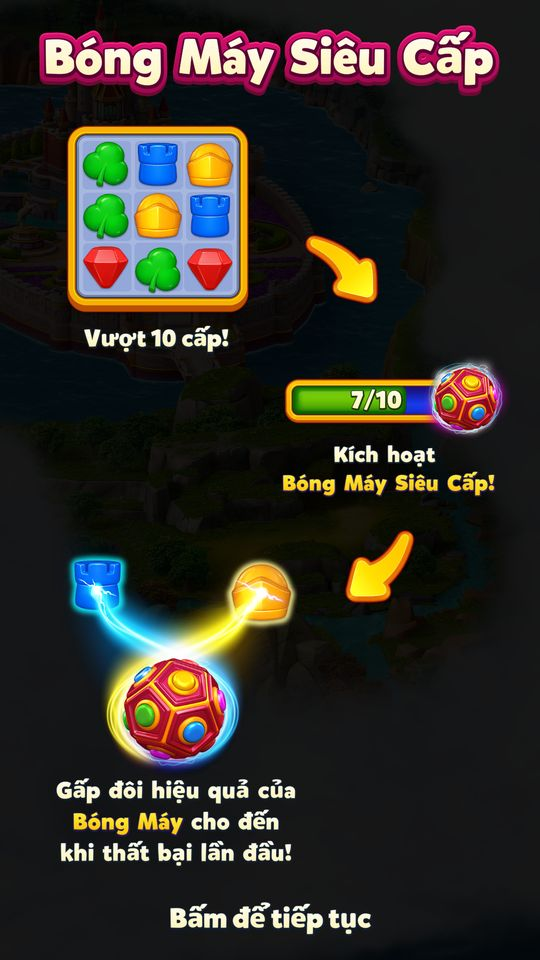
Tutorial Super Electro Ball trước L301: thắng10 màn để kích hoạt, tăng gấp đôi hiệu ứng đến lần thua. Hình7/10 là minh họa hoạt ảnh, không phải tiến độ tài khoản. 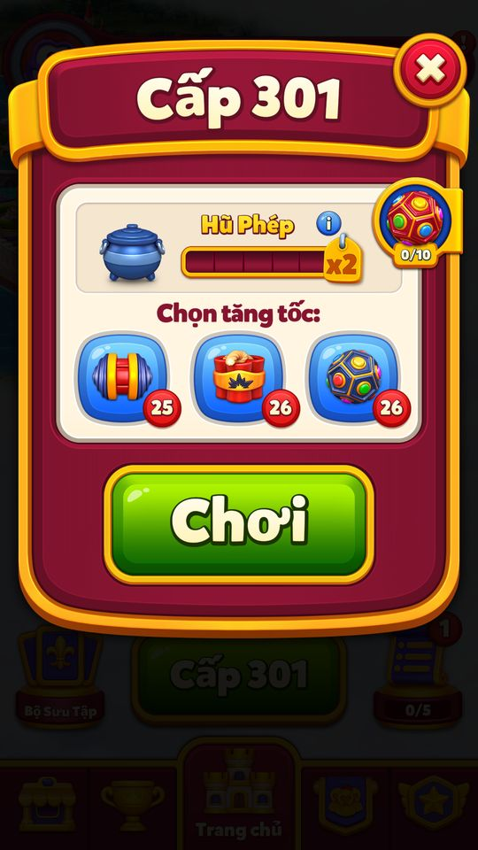
Prelevel sau tutorial hiển thị tiến độ thật0/10,Magic Pot0; chưa kiểm chứng chuỗi10 thắng/kích hoạt. 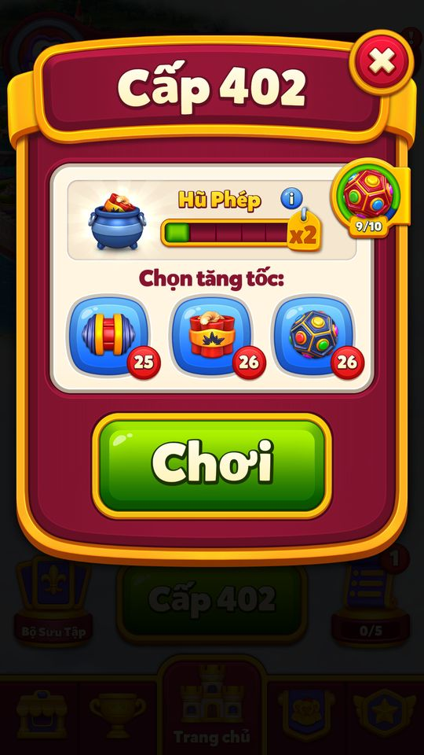
Fixture riêng đặt9/10,không phải chín thắng đã quan sát;L402,Hũ Phép1,ba booster25/26/26. Info mô tả10 thắng,gấp đôi hiệu quả đến lần thất bại đầu;7/10 minh họa khác tiến độ9/10 thực. 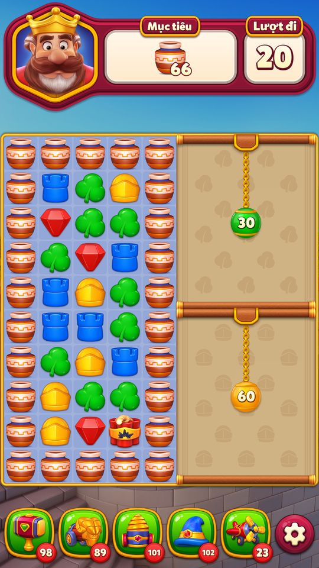
Bắt đầu402 với20 lượt,66 bình;Hũ Phép1 cấp một Dynamite,không chọn booster prelevel. 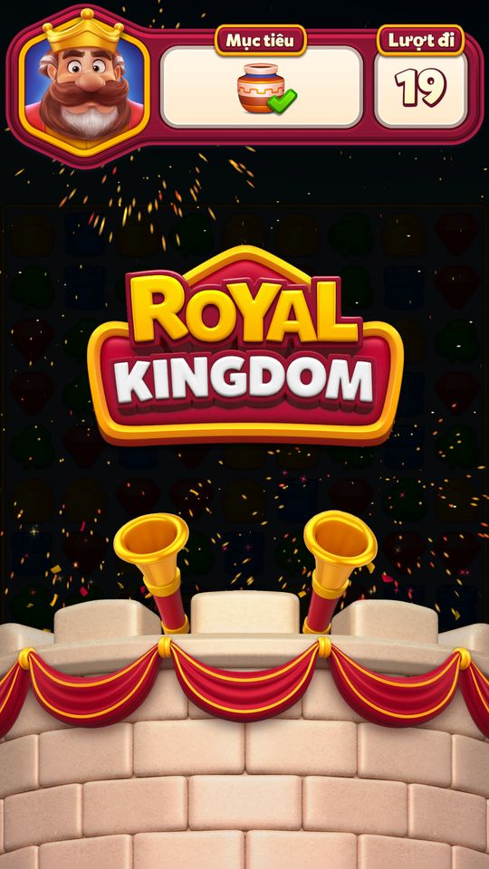
Sau bảy Plane mở rèm,combo Spinner–Dynamite hoàn tất66 bình,còn19 lượt. 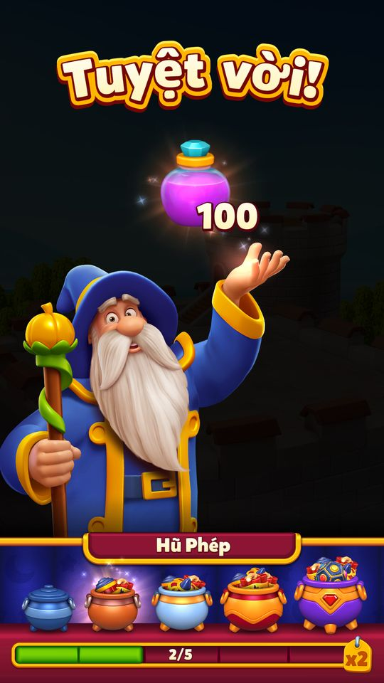
Thắng402:+100potion,Hũ Phép1→2. 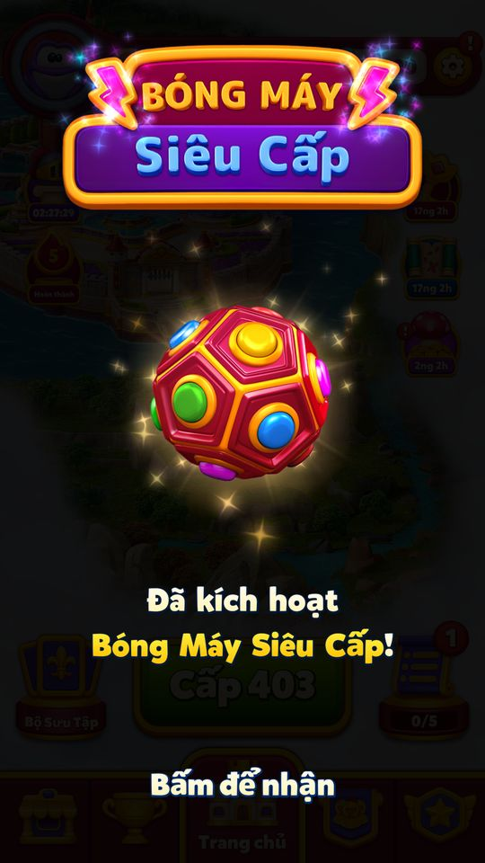
Sau thắng thật từ fixture9/10,Home hiện popup Đã kích hoạt Bóng Mây Siêu Cấp. 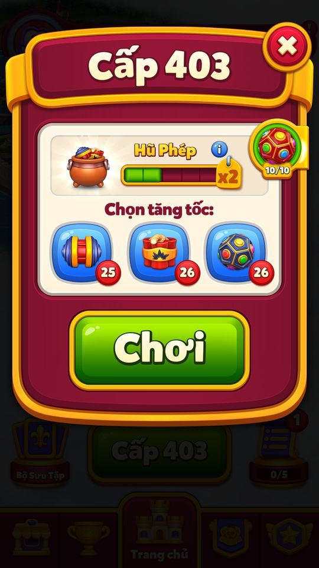
Màn403:SEB10/10,Hũ Phép2;coin2185(+34),potion1000. 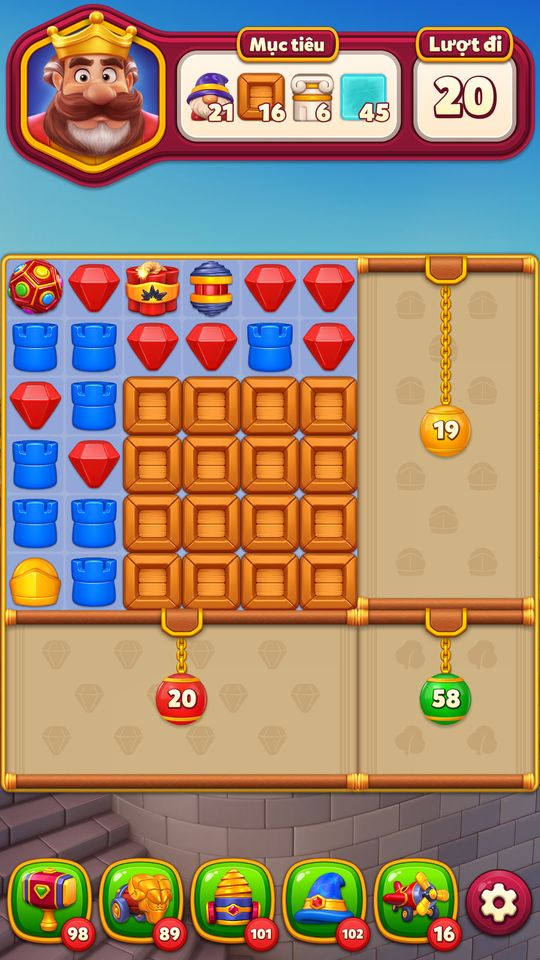
Chọn một Electro Ball prelevel:kho26→25,biến thành SEB đỏ;Hũ Phép2 cấp Dynamite+Rocket,20 lượt. 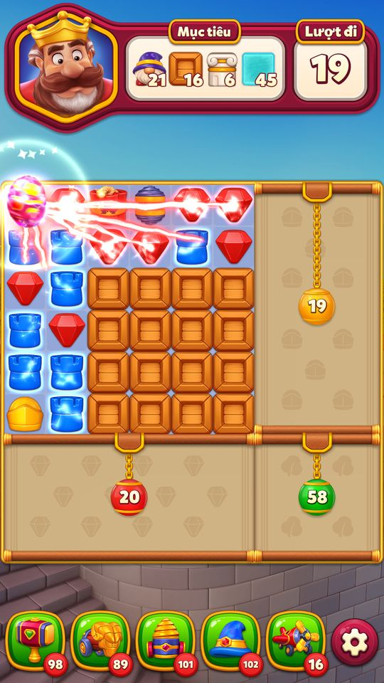
Tap SEB:20→19 lượt,tia đồng thời đánh các viên đỏ và xanh dương. 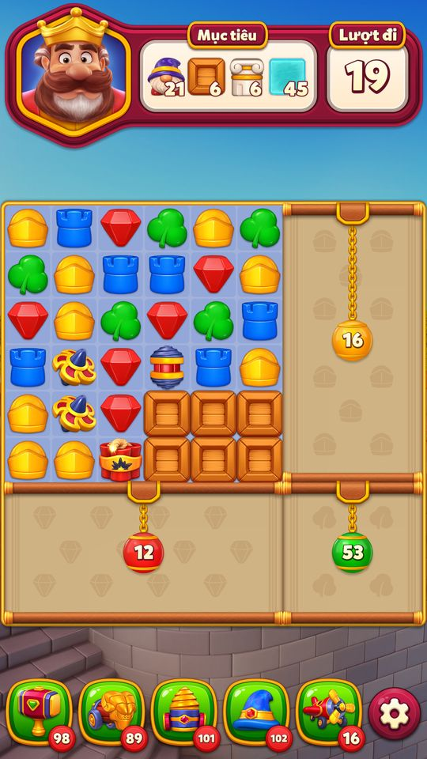
Sau tia và cascade:thùng16→6,ba rèm còn16vàng/12đỏ/53lá;không suy toàn delta là tia trực tiếp. 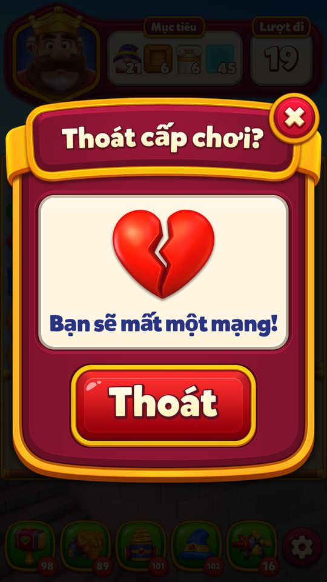
Bước thoát đầu cảnh báo mất một mạng. 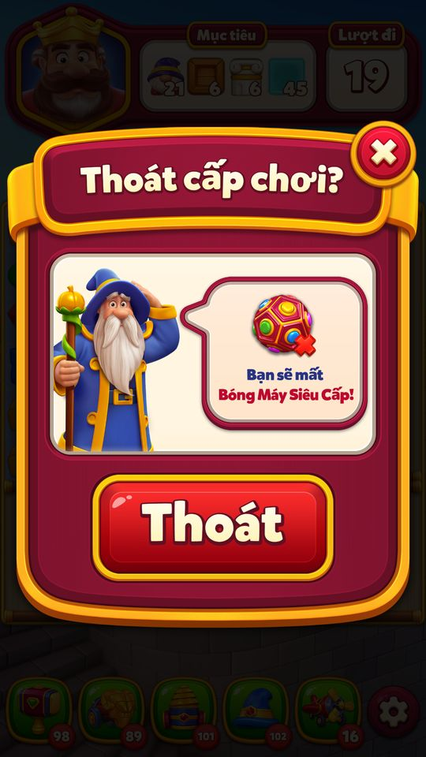
Xác nhận bước đầu hiện cảnh báo riêng mất Bóng Mây Siêu Cấp. 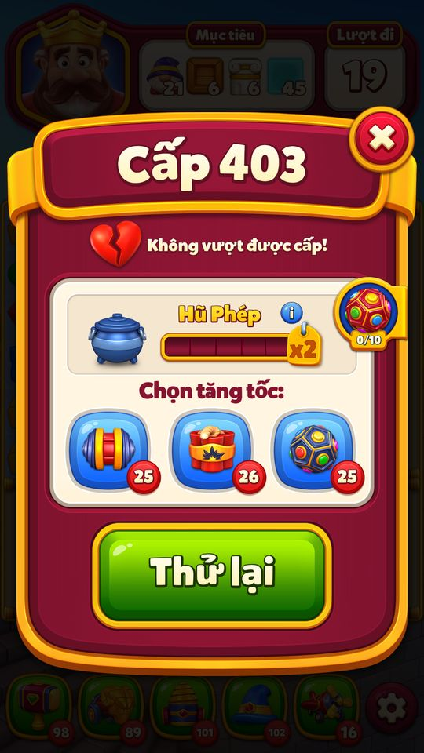
Xác nhận thoát:retry403 hiển thịSEB0/10,Hũ Phép0;Electro Ball đã tiêu vẫn25.


Luật SEB (code + live 11/11)
| Hạng mục | Giá trị | Nguồn |
|---|---|---|
| Chuỗi cần để kích hoạt | 10 level thắng liên tiếp | Code RequiredWinStreakForSuperElectroBall |
| Mốc mở | L101 (AB 28 = B) / L301 (nhóm khác) | Code get_UnlockLevel |
| Hiện trạng thái khoá từ | L11 | Code LockedStateLevel |
| Hiệu ứng | Electro Ball nhắm ≥ 2 màu | Code ElectroBallStrategy.isSuper |
| Mất khi | thua, thoát, level không được khôi phục | Code OnLevelFail, WontRestoreLevel |
| Tặng làm thưởng | level ≥ mốc mở + 10, chuỗi < 10 → chuỗi = 10 | Code CanGiveAsReward, Refill |
| AB 28 của tài khoản snapshot | 3 → mở ở L301 | Live 11/11 AbTestTableItem |
| IntRemoteKeyValue[17] | 0 | Live 11/11 tài khoản mới |
Bit trạng thái trong IntRemoteKeyValue[17] (code)
| Bit | Ý nghĩa |
|---|---|
| 0–4 | chuỗi thắng (0–10) |
| 5 | đã xem tutorial |
| 6 | đã xem popup |
| 7 | cần xem tutorial chuyển icon sang Prelevel |
| 8 | đã chuyển icon (migrated) |
| 9 | đang ở trong level có SEB |
SEB so với Magic Pot (code)
| Magic Pot | Super Electro Ball | |
|---|---|---|
| Mở ở | L32 | L101 / L301 (AB 28) |
| Chuỗi | 1–5 (lên bậc mỗi lần thắng) | 10 (kích hoạt một lần) |
| Phần thưởng | 1–5 power-up đầu level; ×2 điểm event khi đầy | mọi Electro Ball nhắm 2 màu |
| Mất khi | thua / thoát | thua / thoát |
| Tặng qua reward | RewardType 49 (level ≥ 50) | RewardType 50 (level ≥ mốc mở + 10) |
Vận dụng cho game khác
- Một buff “giữ tới khi thua” tạo động lực chơi tiếp rất mạnh và làm tăng giá trị của việc mua thêm lượt (để không mất buff).
- Không thêm vật phẩm mới, chỉ nâng cấp power-up có sẵn: chi phí nội dung thấp, người chơi hiểu ngay.
- Thanh 0/10 có mặt ở cả Home lẫn Prelevel nhắc tiến độ đúng lúc người chơi chuẩn bị bấm Play.
- Ghi chuỗi về 0 ngay khi vào level (chỉ thắng mới ghi lại) — chống mẹo tắt app để giữ buff, kết hợp với luật resume 5 giây.
- Nhận định Rủi ro: 10 trận thắng liền rất khó khi mỗi chục level có 1 Hard, 1 Super Hard và 2 level tấn công; người chơi trung bình hiếm khi đạt — RK bù bằng tặng SEB qua Daily Gift / offer (AB 107/108).
Ảnh cần chụp (6) — 15 ảnh đã gắn
Chụp vào screens/deep_1112/SuperElectroBall/ rồi ghi tên file vào flow[].shots.
- Trạng thái khoá: Icon SEB khoá “Beat Level 301 to unlock”
- Popup SEB: Popup SEB với thanh tiến độ và nút Play/Info
- Đủ 10 → kích hoạt: Panel “Super Electro Ball is now active!”
- Electro Ball siêu: Super Electro Ball đánh 2 màu trên bàn
- Thoát / hết lượt: cảnh báo: QuitDialog với cảnh báo mất SEB
- Thua → mất SEB: Icon Home thanh SEB tụt về 0
Bảng tổng hợp mọi tính năng đã làm chi tiết: RoyalKingdom_ThietKeChiTiet.xlsx.
Mở khóa & điểm vào
get_UnlockLevel: nhóm AB B (2) → 101 (UnlockLevelNewUnlockUi100Group), nhóm khác → 301 (UnlockLevelNewUnlockUi300Group); AB id mới get_NewUserAbId = 28 (seb_unlock_ui_new_user). Live 11/11 (snapshot AbTestTableItem): id 28 = 3 (nhóm C) → tài khoản thử mở SEB ở level 301. Const UnlockLevelControlGroup = 292 vẫn còn nhưng không dùng trong get_UnlockLevel (GetFinishedAbTestGroup chỉ trả 2 hoặc 3 — test đã kết thúc). Trạng thái khóa ("Locked", SEBUnlockText5 "Beat Level {0} to unlock") hiện khi level > 10 (get_LockedStateLevel = 11, ShouldShowLockedState).
Điểm vào:
- Icon Super Electro Ball ở Home (
SuperElectroBallIcon) - Icon trong Prelevel (
SuperElectroBallPrelevelIcon+ tooltip) - Popup
SuperElectroBallDialog(bundlegameplay/super_electro_ball/popup) với nút Play / Info - Dialog thông tin
SuperElectroBallInfoDialog(bundle.../info) - Panel kích hoạt
SuperElectroBallClaimPanel(bundle.../claim) - Phần thưởng RewardType.SuperElectroBall (50)
Cách hoạt động
- Trạng thái nằm trong một số nguyên
SuperElectroBallData(IntRemoteKeyValue khóa 17 =KeyName.SuperElectroBall): bit 0–4 là chuỗi thắng (WinStreak, kẹp tối đa 10), bit 5 đã xem tutorial, bit 6 đã xem dialog, bit 7 cần xem tutorial chuyển icon, bit 8 đã migrate, bit 9 đang chơi với SEB. - Khi bắt đầu level (
OnLevelStart), manager ghi dữ liệu trước/sau vàoLastPlayedLevelData.superElectroBall(BeforeAfterData,HadSeb); nếu chuỗi ≥ 10 (CanStartWithSuperElectroBall) thì tạo pool asset gameplay (SuperElectroBallItemView, SuperElectroBallItemRay, SuperElectroBallUseParticles, SuperElectroElectroCombo…), đặt bit 9 và ghi chuỗi tạm về 0 — level chơi với Electro Ball siêu cấp (ElectroBallStrategy.isSuper: tìm màu phổ biến nhất và tiếp tục nhắm tới khi có ≥ 2 màu). - Thắng (
OnLevelWin) → chuỗi = giá trịafter(+1, giữ 10 nếu đang có SEB) và logSuper Electro Ball win streak updated to {0}; thua/không khôi phục level (OnLevelFail,WontRestoreLevel) → xóa bit 9, chuỗi không được trả lại → mất SEB. - Về Home:
TryAddIconAnimationsAndClaimscho icon chạy thanh tiến trình, khi vừa đủ 10 thì hiện ClaimPanel; khi thua cóPlaySuperElectroBallLoseBarAnimationAction(thanh tụt). - Nếu server refresh tiến trình giữa level,
TryRefundSuperElectroBallForRefreshtrả lại SEB. - 14/11, đợt11: chụp tutorial và prelevel L301.
- UI mô tả10 thắng để kích hoạt, gấp đôi hiệu ứng đến lần thua; prelevel thực0/10,7/10 trong tutorial là minh họa.
- Chưa kiểm chứng chuỗi thắng/kích hoạt/mất trạng thái, chưa full-pass.
- 14/11, đợt12: fixture offline đặt SEB9/10 rồi thắng thật L402→10/10,popup kích hoạt; Hũ Phép1→2.
- L403 chọn Electro Ball prelevel26→25,nhận bóng SEB đỏ, tap bắn cả đỏ và xanh dương;20→19 lượt.
- Thoát hai bước cảnh báo mạng rồi SEB;retry SEB0/10 và hũ0.
- Ledger core_seb_boundary_ledger.json.
- Không phải chuỗi10 thắng tự nhiên/backend; còn giữSEB khi thắng,refresh,reward,migration,lỗi asset.
Phần thưởng
Phần thưởng (theo GDD)
| Ngữ cảnh | Phần thưởng | Bằng chứng |
|---|---|---|
| Chuỗi 10 thắng | Super Electro Ball active cho tới lần thua đầu | UserSuperElectroBallManager.get_CanStartWithSuperElectroBall |
| Phần thưởng event/offer | RewardType.SuperElectroBall (50) → chuỗi = 10 | UserSuperElectroBallManager.Refill |
Số liệu chính
| Chỉ số | Giá trị | Nguồn |
|---|---|---|
| Số level thắng liên tiếp để kích hoạt | 10 | RequiredWinStreakForSuperElectroBall · code const |
| Bit chuỗi thắng (kẹp 0–10 trong set_WinStreak) | 0..4 | WinStreakStart..WinStreakEnd · code const |
| Cờ trạng thái | 5 / 6 / 7 / 8 / 9 | HasSeenTutorialIndex / HasSeenDialogIndex / ShouldSeeMigrationTutorialIndex / HasMigratedIndex / IsInGameWithSebIndex · code const |
| Level mở theo nhóm AB (292 không còn dùng) | 101 / 301 / 292 | UnlockLevelNewUnlockUi100Group / UnlockLevelNewUnlockUi300Group / UnlockLevelControlGroup · code const |
| AB id người mới; nhóm B → mở L101 | 28 | get_NewUserAbId · AB test |
| Nhóm AB | 1 / 2 / 3 | ControlGroup / NewUnlockUi100Group / NewUnlockUi300Group · code const |
| Bắt đầu hiện trạng thái khóa | 11 | get_LockedStateLevel · code const |
| Context unit id, event giả | 23 / 0 (None) / 54 | get_Id / get_EventType / get_LogTag · code const |
Use case (12)
Bấm vào từng use case để mở. Mở/đóng tất cả
UC-01 Mở khóa và xem trạng thái khóa
Các bước- ShouldShowLockedState: level > 10
- Icon/Prelevel hiện "Locked" và
SEBUnlockText5với số level mở - Đạt UnlockLevel →
HasEnoughLevel, icon chuyển sang thanh tiến trình
| Actor | Player |
|---|---|
| Trigger | Đạt level > 10 |
| Điều kiện | Chưa tới UnlockLevel (101/301) |
| Kết quả | Người chơi biết trước tính năng |
| Quy tắc / số liệu | LockedStateLevel = 11; UnlockLevel 101 (nhóm B) / 301 |
| Evidence | UserSuperElectroBallManager.get_ShouldShowLockedState; UserSuperElectroBallManager.get_UnlockLevel; SuperElectroBallIcon.ArrangeLockedState |
UC-02 Tutorial lần đầu
Các bước- ShowSuperElectroBallIconTutorialAction: đưa icon lên trước (BringIconFront), chạm icon mở dialog
- SuperElectroBallSceneTutorial chỉ nút Info
- SuperElectroBallPrelevelTutorial ở Prelevel
| Actor | System |
|---|---|
| Trigger | Lần đầu mở khóa |
| Điều kiện | Bit 5 HasSeenTutorial = 0 (get_ShouldShowTutorial) |
| Kết quả | Đặt bit tutorial |
| Quy tắc / số liệu | Log Super electro ball icon tutorial is active. Icon Status: … |
| Evidence | ShowSuperElectroBallIconTutorialAction.Execute; SuperElectroBallSceneTutorial.Show; SuperElectroBallPrelevelTutorial.StartTutorial |
UC-03 Thắng level tăng chuỗi
Các bước- OnLevelWin: set_IsInGameWithSuperElectroBall(false)
- set_WinStreak(LastPlayedLevelData.superElectroBall.after) (kẹp ≤ 10), lưu IntRemoteKeyValue 17
- Nếu level bắt đầu đã sẵn sàng SEB: SuperBoostOfferManager.ShowSuperBoostOfferDialog = false
| Actor | System |
|---|---|
| Trigger | Thắng level |
| Điều kiện | Đã mở khóa, level không skippable |
| Kết quả | Thanh tiến trình +1 (text SEBPopUpText2 "Beat {0} more levels") |
| Quy tắc / số liệu | RequiredWinStreakForSuperElectroBall = 10 |
| Evidence | UserSuperElectroBallManager.OnLevelWin; UserSuperElectroBallManager.set_WinStreak |
UC-04 Đủ 10 → kích hoạt Super Electro Ball
Các bước- Home: TryAddIconAnimationsAndClaims(fromLevelWinFlow) → PlaySuperElectroBallCollectAnimation
- ShowSuperElectroBallClaimPanelAction tải SuperElectroBallClaimPanel (
SEBClaimSceneText"Super Electro Ball is now active!", tiêu đề theo ngôn ngữelectro_ball_title_<lang>)
| Actor | System |
|---|---|
| Trigger | Chuỗi đạt 10 sau khi thắng |
| Kết quả | Trạng thái SEB sẵn sàng cho level kế |
| Quy tắc / số liệu | Tiêu đề lấy từ bundle gameplay/super_electro_ball/title, fallback tiếng Anh |
| Evidence | UserSuperElectroBallManager.TryAddIconAnimationsAndClaims; ShowSuperElectroBallClaimPanelAction.Execute; UserSuperElectroBallManager.GetTitleSprite |
UC-05 Chơi level với Super Electro Ball
Các bước- OnLevelStart: SetSuperElectroBallLevelStartData(true), TryCreateGameplayPools (bundle
gameplay/super_electro_ball/gameplay) - Ghi IsInGameWithSeb = 1 và chuỗi tạm = 0 (mất nếu thoát giữa chừng)
- Mọi Electro Ball dùng ElectroBallStrategy với isSuper: chọn màu phổ biến nhất (FindMostCommonItem) và nhắm thêm màu cho tới khi danh sách màu ≥ 2 (SendAllRays: isSuper và số màu < 2 → tìm tiếp) — tức là bắn vào ít nhất 2 màu thay vì 1; combo Electro+Electro siêu cấp
| Actor | Player |
|---|---|
| Trigger | Bắt đầu level khi chuỗi ≥ 10 |
| Điều kiện | CanStartWithSuperElectroBall |
| Kết quả | Electro Ball "gấp đôi hiệu ứng" (SEBInfoSceneText3) |
| Quy tắc / số liệu | Analytics LevelStart/LevelEnd có tham số super_electroball_active |
| Evidence | UserSuperElectroBallManager.OnLevelStart; UserSuperElectroBallManager.TryCreateGameplayPools; ElectroBallStrategy (isSuper) |
UC-06 Giữ SEB khi tiếp tục thắng
Các bước- OnLevelWin ghi lại chuỗi = after (10)
| Actor | System |
|---|---|
| Trigger | Thắng level đang có SEB |
| Điều kiện | HadSeb |
| Kết quả | SEB tiếp tục ở level sau — "until your first fail" |
| Evidence | UserSuperElectroBallManager.OnLevelWin; SuperElectroBallLevelData (BeforeAfterData) |
UC-07 Thua / thoát → mất chuỗi và SEB
Các bước- Dialog thoát/thêm lượt hiện cảnh báo (
ShouldShowWarningOnLevelFail; textSEBLose1, biến thể kèm event:SEBLose2,FlyingContestEGOWarningTextSEB,KingdomDuelsQuitWarningSuperElectro,PowerRushQuitWarningText3) - OnLevelFail / WontRestoreLevel: xóa bit 9 IsInGameWithSeb, lưu IntRemoteKeyValue 17
- Về Home: PlaySuperElectroBallLoseBarAnimationAction (thanh tụt về 0)
| Actor | Player |
|---|---|
| Trigger | Thua level, bỏ cuộc, hoặc không khôi phục level |
| Kết quả | Chuỗi về 0 (đã ghi 0 lúc bắt đầu level) |
| Evidence | UserSuperElectroBallManager.OnLevelFail; UserSuperElectroBallManager.WontRestoreLevel; PlaySuperElectroBallLoseBarAnimationAction.Execute; ExtraWarningCreatorEvent.GetSecondWarning |
UC-08 Nhận SEB từ phần thưởng
Các bước- Refill(): set_WinStreak(10)
- Icon chuyển sang trạng thái đầy
| Actor | System |
|---|---|
| Trigger | Reward RewardType.SuperElectroBall (50) |
| Điều kiện | CanGiveAsReward: level ≥ UnlockLevel + 10, HasEnoughLevel, chuỗi < 10 |
| Kết quả | Level kế bắt đầu với SEB |
| Quy tắc / số liệu | Chỉ được thưởng khi chưa đầy |
| Evidence | UserSuperElectroBallManager.get_CanGiveAsReward; UserSuperElectroBallManager.Refill |
UC-09 Mở popup và chơi
Các bước- ShowSuperElectroBallDialogAction → SuperElectroBallDialog (ArrangeProgress / ArrangeForLockedState)
- OnPlayButtonClicked mở Prelevel; OnInfoButtonClicked mở SuperElectroBallInfoDialog
- Đánh dấu đã xem dialog (bit 6)
| Actor | Player |
|---|---|
| Trigger | Chạm icon SEB |
| Điều kiện | Bundle popup đã tải (nếu chưa: Bundles are not downloaded so closing dialog.) |
| Quy tắc / số liệu | SEBPopUpText1 "Beat 10 levels to activate the Super Electro Ball!" |
| Evidence | ShowSuperElectroBallDialogAction.GetDialog; SuperElectroBallDialog.OnPlayButtonClicked; SuperElectroBallDialog.OnInfoButtonClicked |
UC-10 Chuyển icon sang Prelevel (migration)
Các bước- HomeTutorialManager.TryShowPrelevelDialogTutorials hiện
SuperElectroBallReplacementTutorialText"You can now track your Super Electro Ball progress here!"
| Actor | System |
|---|---|
| Trigger | Người chơi cũ cập nhật bản có icon mới |
| Điều kiện | Bit 7 ShouldSeeMigrationTutorial, bit 8 HasMigrated |
| Kết quả | Đặt HasMigrated |
| Evidence | UserSuperElectroBallManager.get_ShouldShowMigrationTutorial; HomeTutorialManager.TryShowPrelevelDialogTutorials |
UC-11 Refresh tiến trình giữa level
Các bước- RefreshProgress → TryRefundSuperElectroBallForRefresh (log
Refunding Super Electro Ball for refresh during game!)
| Actor | Server |
|---|---|
| Trigger | RefreshResponse khi đang trong game có SEB |
| Điều kiện | IsInGameWithSeb |
| Kết quả | Không mất SEB do lỗi đồng bộ |
| Evidence | UserSuperElectroBallManager.RefreshProgress; UserSuperElectroBallManager.TryRefundSuperElectroBallForRefresh |
UC-12 Xử lý lỗi pool asset
Các bước- OnLevelStart: tạo pool khi vào lại (
Creating Super Electro Ball pools at level start due to rescue!) - Không tạo được → ResetSuperElectroBallDueToIssue, FirebaseHelper.LogException (
Super Electro Ball pools are not created but it is playable!) - OnAllPoolsCleared / ClearGameplayPools giải phóng bundle
| Actor | System |
|---|---|
| Trigger | Level có SEB nhưng pool chưa tạo |
| Kết quả | Level vẫn chơi được |
| Evidence | UserSuperElectroBallManager.OnLevelStart; UserSuperElectroBallManager.ResetSuperElectroBallDueToIssue; UserSuperElectroBallManager.ClearGameplayPools |
Cấu hình (15)
Gộp mọi nguồn: const trong code, JSON mặc định trong Resources, config class, storage key, AB test, giá trị server trong snapshot thiết bị 11/11/2026.
| Nguồn | Key | Kiểu | Giá trị | Ý nghĩa | Nơi định nghĩa |
|---|---|---|---|---|---|
| code const | RequiredWinStreakForSuperElectroBall | int | 10 | Số level thắng liên tiếp để kích hoạt | UserSuperElectroBallManager |
| code const | WinStreakStart..WinStreakEnd | bit | 0..4 | Bit chuỗi thắng (kẹp 0–10 trong set_WinStreak) | UserSuperElectroBallManager |
| code const | HasSeenTutorialIndex / HasSeenDialogIndex / ShouldSeeMigrationTutorialIndex / HasMigratedIndex / IsInGameWithSebIndex | bit | 5 / 6 / 7 / 8 / 9 | Cờ trạng thái | UserSuperElectroBallManager |
| code const | UnlockLevelNewUnlockUi100Group / UnlockLevelNewUnlockUi300Group / UnlockLevelControlGroup | int | 101 / 301 / 292 | Level mở theo nhóm AB (292 không còn dùng) | UserSuperElectroBallManager |
| AB test | get_NewUserAbId | int | 28 | AB id người mới; nhóm B → mở L101 | UserSuperElectroBallManager.get_NewUserAbId |
| code const | ControlGroup / NewUnlockUi100Group / NewUnlockUi300Group | AbTestUserGroup | 1 / 2 / 3 | Nhóm AB | UserSuperElectroBallManager |
| code const | get_LockedStateLevel | int | 11 | Bắt đầu hiện trạng thái khóa | UserSuperElectroBallManager |
| code const | CanGiveAsReward | rule | level ≥ UnlockLevel + 10 và chuỗi < 10 | Điều kiện thưởng SEB | UserSuperElectroBallManager.get_CanGiveAsReward |
| code const | GameplayBundleName | string | gameplay/super_electro_ball/gameplay (+ /popup, /info, /claim, /icon, /title, /title_2, /seb_common) | Bundle tải theo yêu cầu | UserSuperElectroBallManager; ShowSuperElectroBall*Action |
| code const | get_Id / get_EventType / get_LogTag | int | 23 / 0 (None) / 54 | Context unit id, event giả | UserSuperElectroBallManager |
| storage key | IntRemoteKeyValue[17] (KeyName.SuperElectroBall) | long bitfield | 0 (live 11/11, tài khoản mới) | Toàn bộ trạng thái SEB, đồng bộ server | facts/runtime/live_1111 U_<id>.IntRemoteKeyValue |
| storage key | FLastPlayedLevelSaveData.SuperElectroBall (FBeforeAfterSaveData) / FRetainedData.SuperElectroBall | save | Before, After, ShouldConsume, HadSeb | Trạng thái SEB trong level đang chơi | SuperElectroBallLevelData |
| storage key | IsSuperElectroBallVideoStartedOnce | flag | Đã chạy cutscene SEB (CutsceneConfigHelper) | CutsceneConfigHelper | |
| asset | Resources SuperElectroBallPrelevelIcon / SuperElectroBallPrelevelTooltip | prefab | Icon trong Prelevel | Resources/ | |
| server info (live 11/11) | AbTestTableItem[28] | int | 3 (nhóm C) | Snapshot 11/11: không phải nhóm B → get_UnlockLevel = 301 | App.AbTestTableItem |
Backend / server
| Command | Chiều | Mục đích |
|---|---|---|
IntRemoteKeyValue key 17 sync | client→server | Đồng bộ chuỗi/cờ SEB |
RefreshResponse | server→client | Ghi đè tiến trình; client hoàn SEB nếu đang trong level |
Định dạng request/response: Giao thức backend.
Giao diện (UI)
| Element | Class | Mục đích |
|---|---|---|
| Icon Home | Royal.Scenes.Home.Ui.Dialogs.SuperElectroBall.SuperElectroBallIcon | Thanh 0/10, khóa, shine |
| Icon Prelevel | Royal.Scenes.Home.Ui.Dialogs.SuperElectroBall.SuperElectroBallPrelevelIcon | Tiến trình + tooltip |
| Popup | Royal.Scenes.Home.Ui.Dialogs.SuperElectroBall.SuperElectroBallDialog | Giới thiệu, Play, Info |
| Panel kích hoạt | Royal.Scenes.Home.Ui.Dialogs.SuperElectroBall.SuperElectroBallClaimPanel | Thông báo SEB đã active |
| Animation | PlaySuperElectroBallCollectAnimation / PlaySuperElectroBallLoseBarAnimationAction | Tăng/tụt thanh |
Analytics (1)
| Event | Tham số | Khi nào |
|---|---|---|
LevelStart / LevelEnd / LevelEndReward | super_electroball_active | Mỗi level |
Storage keys
IntRemoteKeyValue[17] SuperElectroBall FLastPlayedLevelSaveData.SuperElectroBall IsSuperElectroBallVideoStartedOnce
Chưa đọc được / ghi chú
- Cách tính
aftertrong SuperElectroBallLevelData (+1, kẹp 10) suy từ mẫu BeforeAfterData, chưa đọc hàm khởi tạo.
Tính năng liên quan
Booster Magic Pot (bình thuốc) Electro Blitz - Diamond Mine Super Boost Offer
Nguồn đã đọc
- features/UserSuperElectroBallManager.md
- PseudoC/.../Player/Context/Units/Level/UserSuperElectroBallManager.c
- PseudoC/.../Items/SpecialItems/ElectroBallItem/Strategy/ElectroBallStrategy.c
- PseudoC/.../Home/Ui/Dialogs/SuperElectroBall/*.c
- appendix/localization.tsv (SEB*)
- facts/runtime/live_1111 (IntRemoteKeyValue)